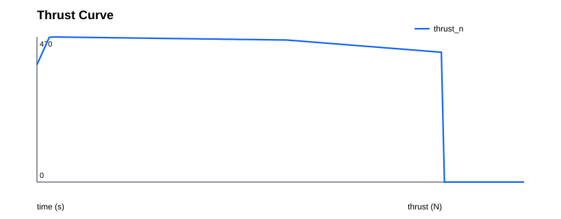
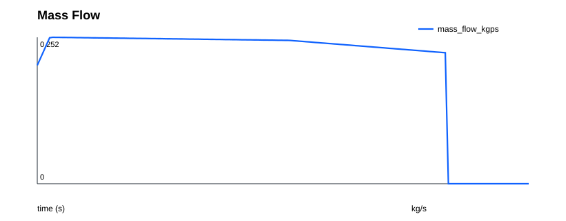

Propulsion Report
{
"vehicle": "baseline_research_vehicle",
"samples": 160,
"burn_time_s": 13.0,
"peak_thrust_n": 469.88083416087386,
"total_impulse_n_s": 5903.9242854733875,
"average_thrust_n": 454.14802195949136
}
